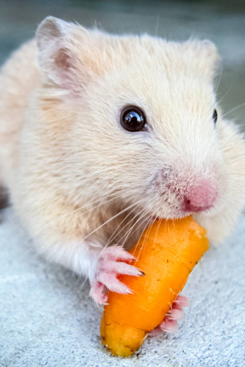

The Ultimate Pet Market
Welcome to Rad's Pet Market! Here you can order the pet of your dreams that will change your life for the better and we will deliver right to your home.

Today In Pets: Random Facts

Carrots and other crunchy veggies can assist with your guinea pig's dental hygiene, as well as supply them with a bounty of nutrients that are found in the root and the greens. So, yes, carrots are a really good veggie for your guinea pig!
Macaws are the second most intelligent parrots. Their walnut-sized brains contain an astonishingly large number of neurons in their forebrain, with possibly higher levels of connectivity that can be found in primates.
Goats can be taught their name and to come when called. They are extremely intelligent and curious and are very often not given credit for being the smart and loving creatures they actually are.
A single bunny is a lonely bunny
Rabbits are social creatures and are happiest in the company of their own species. The best combination is a neutered male and neutered female. They can become extremely sad and depressed if kept on their own.
Animals have a much better attitude to life and death than we do. They know when their time has come. We are the ones that suffer when they pass, but it's a healing kind of grief that enables us to deal with other griefs that are not so easy to grab hold of. When we adopt a dog or any pet, we know it is going to end with us having to say goodbye, but we still do it. And we do it for a very good reason: They bring so much joy and optimism and happiness. They attack every moment of every day with that attitude.
- Anonymous
Call to action! It's time!'
Sign up today to gift you or your loved ones the perfect gift by clicking the button to your right.